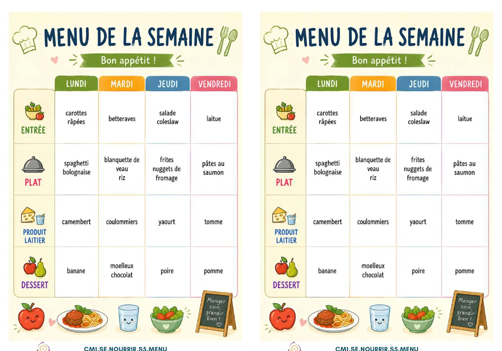

ÉTAPE 1
La cantine de Montfleury
À partir du menu et du texte, classe les aliments selon leur provenance. Touche un aliment puis une case. Un aliment déjà placé peut être retiré en le touchant.

Voir le menu de la semaine
Le texte donne les indices
La ville travaille avec des agriculteurs de sa région pour les légumes, les fruits de saison, la viande et les produits laitiers. Les pâtes sont fabriquées en France. Le chocolat vient de Belgique, le riz du Cambodge, le saumon de Norvège et la banane des Antilles françaises.
Aliments à classer — ordre mélangé à chaque tentative
Production localeProduits par les agriculteurs de la région
0Produit en FranceFabriqué en France, sans être indiqué comme local
0ImportéVient d’un autre pays ou territoire
0